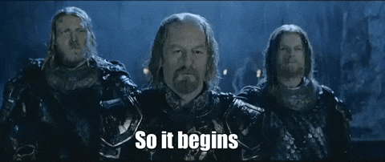
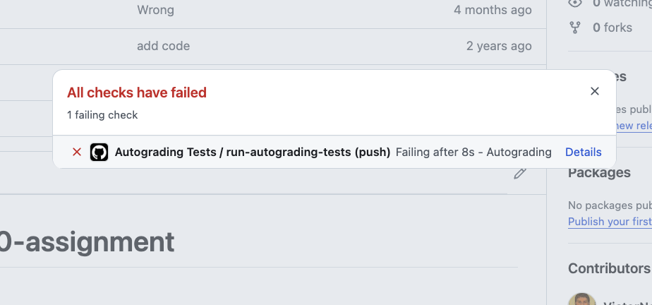

Lab 00: Getting Started

Objectives:
In this exercise, you will:
- Login to a workstation in the Unix Lab.
- Use Linux commands to interact with files and folders.
- Use VS Code to edit, compile, and run a program.
Introduction
Welcome to CS112! In this first lab exercise, we will introduce the Visual Studio Code editor, and see how we can use it to write a C++ program. The exercise assumes that a C++ compiler (e.g., GNU’s gcc/g++), the make utility, and VSCode have all been installed on your system. You should also be familiar with basic C++ principles – review 1.4. Let’s look at a C++ program — C++ for Python Programmers if you are coming into this class from CS10X and are used to Python.
This lab tells you how to use VS Code in the CS Dept’s Unix Lab (SB 354), which is currently using Ubuntu Linux. If you have not used Linux before, you may want to work through this Introductory Exercise.
Using Linux
I would recommend that you bookmark this Linux Quick Reference, so that you can locate it quickly in the future. Your instructor will conduct a quick introduction to using the Linux command-line. These are useful skills to practice, as they will allow you to login to a remote system (e.g., from home) and work with your files remotely.
Where to Store your CS112 Work
You will have many assignments in CS112, and it is useful to put them all under one directory (“folder”). I recommend you create a directory called cs112, in your home directory. You can do this from the Terminal Window you opened before. Just type this:
mkdir cs112To change your current working directory to cs112, do this:
cd cs112To verify what is your current directory, do this:
pwdYou should remember to do this before starting each lab and assignment.

Launching VS Code
There are different ways to launch VS Code, but for now, just do this:
Open a terminal window; and
If you haven’t already (e.i., your terminal prompt doesn’t have a ~/cs112 in it),
cd cs112Enter the following command:
code . The VSCode window should pop up pretty quickly. (If you see something about a password not matching your keychain, just cancel it a few times. We’ll work on fixing that in the future.)
Create your GitHub Account
GitHub is a web service where all your code for this course will be stored. Graders will be able to go to your code and see it and grade it. Additionally, you’ll be able to access your code from any machine – the lab machines or your personal machine – as long as you submit your code to your repository.
If you do not already have a GitHub account, you should go to https://github.com and create a new account. I would prefer it if you would use your Calvin email address here. After getting a verification code via email and verifying your account, the website asks you what kind of features you will be using. At the bottom of this page it says “Skip Personalization”. Just click that to skip all the personalization stuff. You will likely need to set up two factor authentication - 2FA - as part of this process. If you have good texting capabilities in the CS computer labs, you can use the SMS text option for 2FA authentication.
Keep your github.com web page open in the browser for the next step.
Creating SSH Key Pair
Github security now requires that you use an SSH Key Pair. An SSH key pair is two numbers – a public key and a private key – stored in two files. The public key can be shared publicly, but the private key should not be shared.
The manual process is below, but it can be skipped as we’ll use an automated tool to generate a key specifically for this lab. Run the following command in your terminal:
/usr/local/scripts/gen-sshkey-github.shYou will need to copy the bottom of the output you see into github. To copy that output, select it with your mouse, and either do Ctrl+Shift+c or choose Edit -> Copy from the menu. Do that now.
Now, go to your github.com account in the browser. You will need to go to this page https://github.com/settings/keys while in your account. (Try clicking on the link, but if that does not work, do the following: in your github.com account page, find the image in the upper-right corner of the page, click on it, then choose Settings from the dropdown menu, then choose SSH and GPG Keys on the left menu, and click that.)
Click the New SSH Key button in the upper right. Choose a Title: CS112 works well. Then paste the key you copied earlier into the Key textbox. Click the Add SSH Key button.
If you plan to work on your own machine instead of a lab machine, you will have to repeat this step on your own laptop. But, the script at /usr/local/scripts/gen-sshkey-github.sh will not work on your machine. Use ssh-keygen instead. It is available on most operating systems already.
Creating a Project
Each lab and homework will contain a link to a GitHub Classroom assignment invitation. The lab or homework will give you instructions on how to accept the invitation and then download the code for that assignment.
When you click on the link, a repository for you will be created. The webpage will give you instructions on how to see that repository. The webpage for your repo will look something like this: https://github.com/24SP-CS112/lab0-yourgithubaccount
Click on the invitation for this lab: https://classroom.github.com/a/QYJE3sJ0
Go to the webpage for your repository. You will need to get the ID of the repo. To get this, you click on the button <> Code, then click on the SSH tab. Then click on the two boxes to the right of where it says git@github.com:.... This copies your repo id to your clipboard.

(Keep this tab open in your browser – you’ll need it later in the lab.)
The instructions in each assignment will remind you what to do:
- Open a terminal (it could be the terminal from Linux or you can use the terminal from VS Code by typing Ctr + Shift + `).
cd cs112git clone <your github repo here>(replace everything between < and >)
For Lab 0, do this now replacing <your github repo here> with what you copied to your clipboard (i.e., paste it in).
When you do this, git clone will download your repo to your cs112 directory, into a directory called lab0-yourgithubaccount (where yourgithubaccount is actually your github account name.
In the terminal do the following:
ls This will show you the name of the directory containing the lab0 code.
cd into that directory, replacing yourgithubaccount with your actual github account name:
cd lab0-yourgithubaccount
ls This will show you what files have been installed for you for this lab.
Also, do the following, which you will never have to do again. In the terminal type (replacing John Doe, johndoe etc. with your information):
git config --global user.name "John Doe"
git config --global user.email johndoe@calvin.eduIf you want to check your credentials at any time, in the terminal type:
git config --global --listCustomizing VSCode
VS Code has tons of features. We will configure only a few of them at this point.
First, let’s install the C++ extensions. In the menu bar of VS Code, select File -> Open Folder. Choose the directory that you downloaded when you did git clone above. That directory will be under your cs112 directory. Next, open the main.cpp file. When you open that file VS Code is going to suggest (in the lower-right corner) that you install some extensions to help you work with C++ files. The extension that you want to install is called the C/C++ Extension Pack. Select that and install it.

Go to your VS Code window. Hit the F1 key, which should open the Command Palette at the top of the window. Start typing Preferences:
When you see Preferences: Open User Settings appear, select it. On the resulting page there is a search bar at the top. In the search bar, type Auto Save. You should see a control appear labeled Files: Auto Save. From the dropdown menu, select onFocusChange. This will make sure that your files are automatically saved any time you select another file or another window. No more remembering to save!!

Don’t close the Settings page yet! Instead, erase where you typed Auto Save, and now search for Tab Size. You should see a control called Editor: Tab Size. Set this value to 4.
Now, erase Tab Size so that you are not searching for anything.
Under Extensions, you should see a C/C++ section. Select that, and then Formatting as shown below.
Scroll down until you see C_Cpp: Clang_format_style. Replace whatever you find in the input box with this:
{ BasedOnStyle: Google, IndentWidth: 4, AccessModifierOffset: -4, AllowShortFunctionsOnASingleLine: InlineOnly }
You can close the Settings window now.
Compiling your Program
Take a look at your main.cpp file. It should look like this:
/* main.cpp
* Author: Prof. Victor Norman
* For: CS 112, Lab 0 at Calvin University.
*/
#include <iostream>
#include <string>
using namespace std;
int main() {
cout << "Welcome to CS112!" << endl;
return 0;
}Go back to your Terminal window. Make sure you are in the directory where your code is. You can confirm this by typing pwd and/or type ls to list the files in the current working directory. You should see that you are in cs112/lab0-yourgithubaccount, and that there is a file called makefile there.
To compile your program, type make. This command reads your makefile, which gives instructions on how to build your program. When the build succeeds, do ls again to see that now there is a file called lab0. This is your executable that you just built.
Running Your Program
To run the executable, in the terminal, type
./lab0 This is telling the terminal shell to run the lab0 executable that is in this directory.
Practice Writing Code
- In main.cpp, select all the code and delete it. Then, rewrite the code so that it prints out Welcome to CS112 and C++!. Don’t cheat! Practice makes perfect. If you can’t figure out why you are seeing an error, collaborate with your neighbor. Remember you have to compile your program each time before you try to execute it.
- In your
main(), define a variable name of type string, and initialize it to your name by asking for an input from the keyboard (take a look at the cin command in C++). When you run your executable, it will be waiting for you to type your name and hit Enter!
strings are surrounded by double quotes in C++. But in the case of entering them by using cin, double quotes are unnecessary.
Change main, so that it now prints out
Welcome to CS112 and C++, your name here!using the variable. To do this, use multiple << operators, similar to this:
cout << "Welcome" << aVariable << endl;Make sure you put the exclamation point on the end. Now, try recompiling and running
./lab0- Now, create a second file called utils.cpp and in there, put this code:
int courseNumber() {
return 112;
}Then, create a file called utils.h and in there, put this code:
int courseNumber();- In your main.cpp file, add
#include "utils.h"to the area where you have #include <iostream>.
Use "utils.h" not <utils.h>
Now, in your code in main(), instead of hard-coding 112 in your output, call the function courseNumber() to get the course number.
Compile your project, fix any problems the compiler finds, and run your project. When you have your code working (i.e., the output looks identical to what you had after step 2 above), go on.
Submitting your Code for Grading
If you do not submit your code, the grader cannot see it and grade it! Do not forget to do this step!
When you get your code working, submit your code to github:
In VS Code, click on the Source Control icon on the upper left and type in a commit message, then click the checkmark icon to submit your code. Go through the various pop-up boxes to commit and push your changes to your online repo.
When you push your changes to your online repo, a set of automated tests may be run (for most labs and projects). To find out if your automated tests passed, look at your online repo. If you see a green checkmark, tests have passed! But, in mine, I see this:

If I click on the red X, I see this:

To see the steps to get your errors report, see video below.

Click on Details to see information about what automated test failed. In this case, there is only 1 automated test, so if it fails your output is not what is expected.
If your code is not passing, make sure the output exactly matches those tests, including spaces – there is a space after "C++, ". Also make sure the autograder can receive an input command to enter your name. In the autograding test, the name Amunzle is given as input to the program, so the test expects this as output:
Welcome to CS112 and C++, Amunzle!If you have problems, you should go back and fix them, and then resubmit until the automated test passes. When you are done, you are free to go. Be sure to logout from your workstation, so that no one plays any pranks with your account!
Grading Rubric
10 points total
- code compiles and passes autograder tests: 5 pts.
- code is clean and neat: 2 pts.
- miscellaneous (see below for examples): 3 pts.
Ways students have lost points in the past:
- -1: No implementation for
courseNumber() - -1: No call to
courseNumber()inmain() - -2: No variable to display your name
- -1: Implementation for
courseNumber()should be in utils.cpp, not the header file utils.h. - -1: Good, but please format your code!
If you have time and you have your laptop with you, this would be a good time to follow the instructions on the CS112 Moodle page to set up your laptop to access the CS lab machines remotely using VS Code Tunnels.